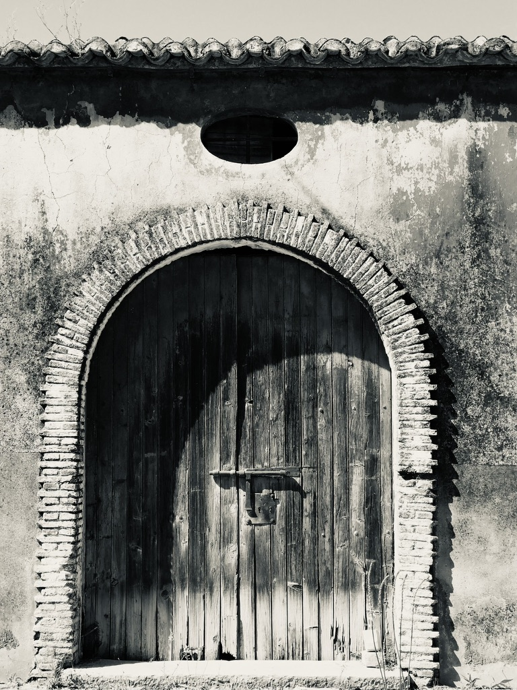

My Story
My work explores simplicity, stillness, and the quiet spaces that allow us to breathe.
Through minimalist painting and black-and-white photography, I am drawn to what remains when excess is removed — light, texture, form, and presence.
I work intuitively, letting materials, light, and silence guide the process rather than planning outcomes.
My practice is rooted in a longing for calm, clarity, and honesty — both in my surroundings and within myself.
This work is an invitation to slow down, to notice subtle beauty, and to reconnect with what is essential.
— Sidney Roesch